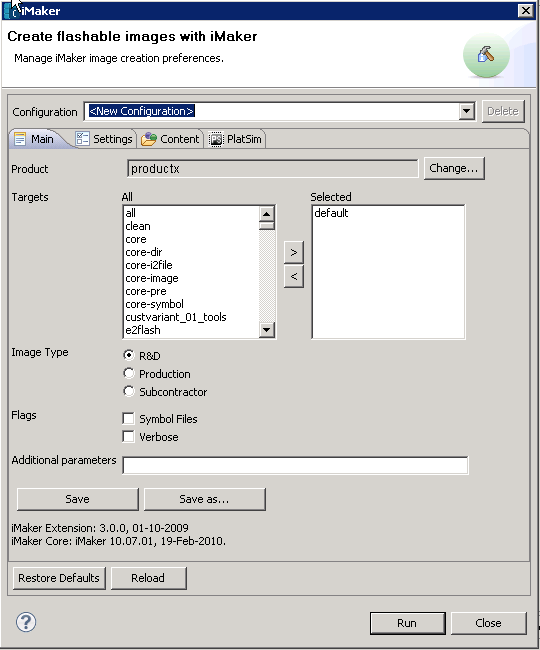

Managing preferences
Before you can build a ROM image, you must define the preferences for a configuration. In iMaker,
a configuration can be thought of as a container of product and other information.
- Select the project that you want to use as the basis for image creation.
- Select Open iMaker Dialog... option from the iMaker pulldown menu on the toolbar. iMaker Extension will now start scanning the environtment to query
information from the underlying iMaker commandline tool. This may take a while, but this action occurs only once for each project.
- When the iMaker Dialog is opened, it is populated with data from the active environment. Default product is selected if one is configured, otherwise the first product is selected.
User can change the product using the Change... button. Example is shown bellow.

- Once data is filled in the fields, a flashable image can be created. Press
the Run button at the bottom of the dialog. Remember to add the desired targets to the selected list of targets.
Saving the preferences for a configuration
To save the fields of a configuration to a file, do the following:
- Press the Save as...
- Choose the parent folder where to save the file, it is recommended to save under the selected project. See below image.

- All saved preferences are visible in the configuration combobox on the top of the dialog. Any of these saved files can be activated and used for image creation.
Settings tab
To modify the values
of the variables of the selected product (or makefile), select the Settings
tab in the iMaker dialog. See the following example:
Through this tab user can override the default variable values in the iMaker core. Any modified parameter will be passed to iMaker cmd throuht execution command.
Debug tab
The debug tab allows user to add binary and data files to the image. These files can be added to different sections of the image. The binary files can be easy changed to debug versions. Currently CORE and ROFS sections are supported.
Files cannot be added to UDA for example through this tab.

Platsim tab
The contents of the platsim tab will be enabled, when you select a valid platsim configuration from the main tab. The platsim configuration must define USE_PLATSIM variable, in order it to be
consider as valid. This variable must be non-empty. Users can edit the platsim configuration makefile and add USE_PLATSIM=1 then restart carbide.c++. Currently only all target is supported. All
target creates an image, which contains all image sections (core, rofsx, ...) and configures the selected platsim instance with the created image. Selecting (run platsim after image creation) checkbox causes
platsim instance to be started in the end of the image creation process.